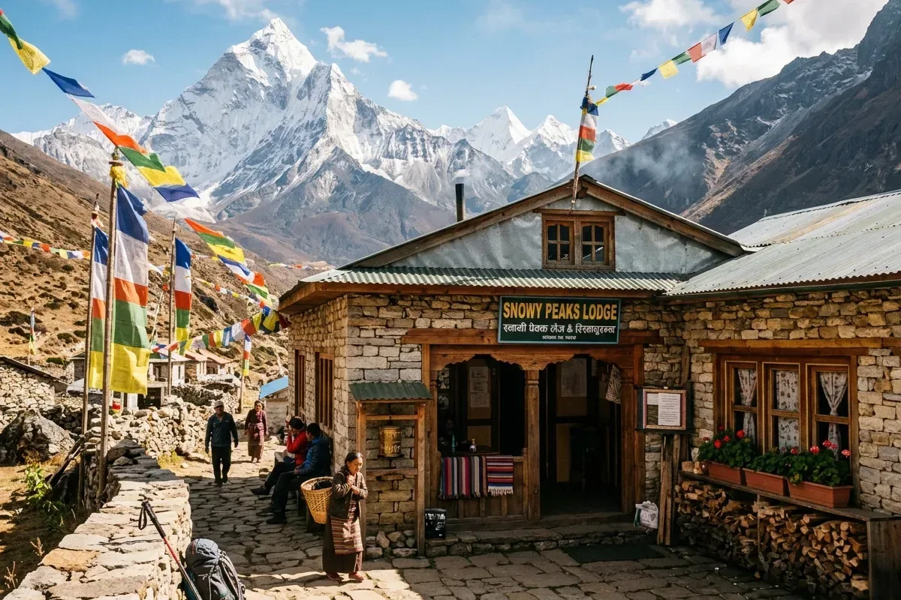
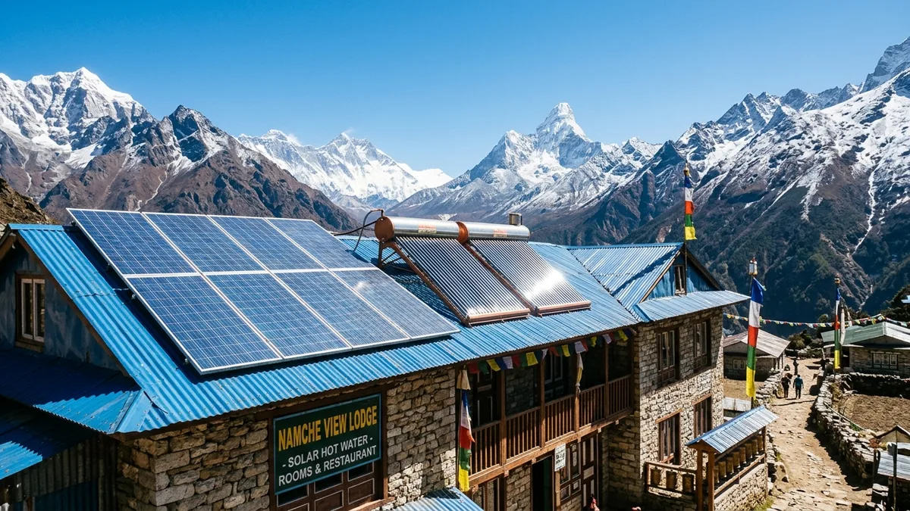
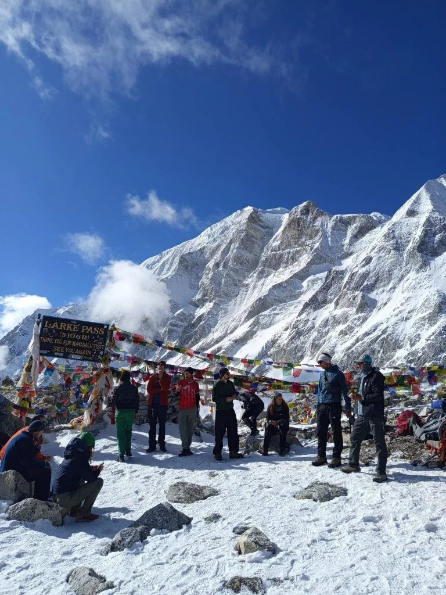
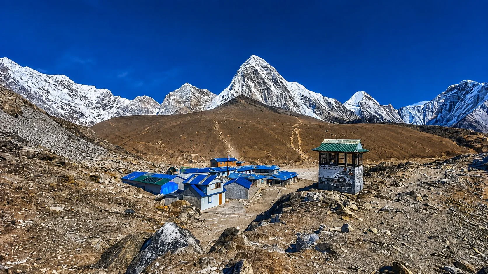

What Exactly Is a Nepal "Teahouse"?

To someone who has never hiked in the Himalayas, the word "teahouse" often brings to mind a quaint British cafe serving Earl Grey and scones. In Nepal, however, a teahouse is something vastly different: it is a small, family-run rustic mountain lodge that provides weary trekkers with shelter, bed, hot meals, drinking water, and warm communal companionship.
Decades ago, early Himalayan mountaineers and trekking pioneers slept in private Sherpa and Tamang family homes. Gracious local villagers would offer hikers a wooden floor space near the kitchen hearth, hot butter tea, and a bowl of roasted barley flour (tsampa). Over the past forty years, as iconic routes like the Everest Base Camp Trek and the Annapurna Circuit drew thousands of international adventurers, these humble trail homes evolved into purpose-built timber-and-stone lodges.
Today, teahouses are the beating heart of Nepal's trekking infrastructure. You will find them spaced every 1 to 3 hours along popular routes, perched on vertical cliff edges, tucked into river valleys, and clinging to windswept high-altitude glacial moraines up to 5,164 meters at Gorakshep.
Every teahouse consists of three core components:
- The Communal Dining Hall: A spacious, heated central living room where trekkers eat, read, play cards, and socialize around a glowing central potbelly stove.
- The Accommodation Wing: A separate, unheated hallway of simple twin-share bedrooms containing wooden bed frames, foam mattresses, pillows, and blankets.
- The Kitchen & Service Area: The bustling heart where the lodge owner, family members, and local cooks prepare everything from steaming plates of Dal Bhat to handmade momos, apple pies, and fresh ginger tea from scratch.
What Are Teahouse Bedrooms Actually Like?

One of the most frequent surprises for first-time Himalayan trekkers is the minimalist nature of teahouse bedrooms. While dining halls are warm and lively, bedrooms on Nepal trails are completely unheated. At elevations above 3,500 meters, interior room temperatures regularly drop well below freezing (0°C to -10°C / 32°F to 14°F) overnight.
Here is a realistic breakdown of what to expect when you turn the brass padlock key to your room:
Bedding & Mattresses
- Twin Bed Layout: Rooms virtually always feature two single twin beds separated by a narrow walking aisle and a small wooden nightstand.
- Foam Mattresses: Mattresses are 3 to 4-inch firm high-density foam set upon wooden slats or plywood bases.
- Pillows & Blankets: Lodges supply a pillow and a heavy synthetic or cotton quilt (quilt/blanket). While cozy, they are washed only periodically during peak season.
- Sleeping Bag Requirement: Always bring your own 3-to-4-season down sleeping bag (-10°C to -15°C comfort rating) as detailed in our Everest Packing Checklist.
Walls, Insulation & Sound
- Plywood Partition Walls: In most standard teahouses, room partition walls are constructed of uninsulated 6mm to 9mm plywood sheets.
- Sound Travel: Plywood stops eyes, but not ears. You will hear zippers, snoring, coughs, and early-morning alarms from four doors down.
- Essential Trail Item: High-grade silicone or foam earplugs are mandatory for a restorative night's rest in thin air.
- Lighting: A single low-wattage solar LED bulb hangs from the ceiling. There are almost never electrical wall outlets inside standard bedrooms.
In lower elevation hubs such as Lukla, Phakding, Namche Bazaar, and Pokhara, premium teahouses and luxury lodges offer attached private bathrooms, heated electric blankets, and carpeted floors. However, once you pass 4,000 meters into places like Dingboche, Lobuche, Gorakshep, Thorong Phedi, or Dharmasala, rooms become strictly utilitarian sanctuaries meant for sleeping.
"Dal Bhat Power 24 Hour": The Legendary Trail Fuel

If you spend even one day trekking in Nepal, you will see porters and guides wearing T-shirts emblazoned with the famous slogan: "Dal Bhat Power, 24 Hour, No Toilet, No Shower!"
Dal Bhat is not merely a meal; it is the spiritual and biological fuel of the entire Himalaya. Virtually every Sherpa guide, mountain porter, lodge owner, and seasoned trekker eats this traditional platter twice every single day—at midday for lunch and at 7:00 PM for dinner.
Anatomy of the Dal Bhat Platter
Served on a traditional heavy brass or stainless steel compartment tray (thali), authentic mountain Dal Bhat includes:
- Bhat (Steamed Rice): A generous mound of fluffy white basmati rice providing rapid, readily available complex carbohydrates for strenuous uphill climbs.
- Dal (Lentil Soup): A piping hot bowl of slow-simmered yellow or black lentils seasoned with cumin, coriander, ginger, garlic, and turmeric. It delivers crucial plant-based protein and replenishes electrolytes lost through sweat.
- Tarkari (Curried Vegetables): Seasonal vegetables (typically potatoes, cauliflower, cabbage, green beans, and carrots) cooked in a fragrant Himalayan curry sauce.
- Saag (Mountain Greens): Sautéed mustard greens, spinach, or wild mountain leafy greens cooked with a touch of mustard oil and fenugreek.
- Achar (Spicy Pickle / Chutney): A fiery tomato, sesame, or fermented mustard-green (gundruk) pickle that provides a zesty punch and stimulates appetite in thin air.
- Papadum: A crispy, roasted lentil flour wafer that adds satisfying crunch to the meal.
The single greatest perk of ordering Dal Bhat on the trekking trail is the sacred Nepalese custom of unlimited second (and third!) helpings. As soon as your plate begins to empty, the lodge hostess or kitchen assistant will appear with pots of steaming rice, ladlefuls of hot dal, and bowls of warm curry, asking "Aru bhat?" (More rice?). You can eat until you are completely sated at no additional charge. No other item on the teahouse menu offers free refills.
The Complete Teahouse Menu: Breakfast, Lunch & Dinner

Trekking in Nepal does not mean subsisting on monotonous rations. Thanks to decades of catering to travelers from every continent, teahouses feature remarkably diverse multi-page menus combining traditional Nepali, Sherpa, Tibetan, and Western comfort dishes.
1. Breakfast: Fueling the Morning Ascent
Trekkers typically order breakfast the night before so it is ready between 6:30 AM and 7:30 AM before trail departure:
- Porridge & Oatmeal: Steaming bowls of hot rolled oats cooked with milk or water, topped with apple slices, banana, honey, or cinnamon. The quintessential gentle fuel for cold mountain mornings.
- Tibetan Bread: A thick, circular wheat flatbread deep-fried to golden perfection with a crispy exterior and soft, fluffy interior. Served hot with butter, jam, or local wild honey.
- Eggs Any Style: Scrambled, fried, poached, or folded into vegetable omelettes (onion, tomato, and cheese).
- Tsampa Porridge: Roasted Tibetan barley flour porridge, high in soluble fiber and packed with sustained, slow-burning mountain energy.
- Chapati & Muesli: Dry-roasted Indian whole wheat flatbread or muesli served with warm powdered milk or yogurt.
2. Lunch & Dinner: Carbohydrates & Mountain Comfort
At midday and in the evening, menus expand into hearty, calorie-dense dishes designed to replenish 3,000 to 4,500 calories burned hiking across steep mountain topography:
- Momos (Steamed or Fried Dumplings): Nepal's beloved national delicacy. Delicate flour wrappers filled with spiced minced potatoes, cabbage, onion, and cheese (or water buffalo meat lower down), served with a spicy sesame-tomato dipping sauce.
- Thukpa (Tibetan Noodle Soup): A large, restorative bowl of hand-pulled noodles and seasonal vegetables submerged in a steaming, garlicky, spiced vegetable broth. Perfect for thawing frozen fingers after a chilly afternoon hike.
- Fried Noodles (Chowmein): Wok-fried yellow wheat noodles tossed with shredded cabbage, carrots, bell peppers, soy sauce, and optional yak cheese or egg.
- Fried Rice: Basmati rice stir-fried with mixed vegetables, egg, ginger, and garlic.
- Sherpa Stew (Shyakpa): A thick, rustic broth packed with handmade thick-cut noodles, potatoes, carrots, cabbage, and dried mountain herbs.
- Western Classics: Mountain-style pizzas with thin crusts and melted yak cheese, macaroni pasta with tomato sauce, potato rosti pancakes, and fried vegetable spring rolls.
- Apple Pie & Custard: Especially famous in the lower Annapurna Valley (around Marpha and Jomsom, the apple capital of Nepal), fresh baked apple turnovers topped with warm vanilla custard provide heavenly evening comfort.
The High-Altitude Meat Rule: Why You Should Trek Vegetarian

Every experienced Himalayan guide gives their clients the exact same advice on Day 1 of the trek: go strictly vegetarian once you climb into the high mountains.
This recommendation is not rooted in religious pressure; it is a critical, evidence-based matter of gastrointestinal safety and food hygiene.
No High-Altitude Slaughter
- Sacred Buddhist Sanctuaries: High Himalayan valleys such as the Khumbu (Everest) and upper Manaslu are sacred Buddhist valleys (Beyul) where the killing of animals is strictly prohibited by religious decree.
- Meat Must Be Imported: Because no animals may be butchered locally, all chicken, pork, and buffalo meat must be slaughtered in lower lowland valleys and flown or trucked in.
The Unrefrigerated Porter Chain
- No Cold-Chain Logistics: There are no refrigerated trucks or freezer containers on Nepal's mountain footpaths.
- Days in Sunlight: Raw meat is packed into woven bamboo wicker baskets (doko) and carried on porters' backs or tied to yaks for 3 to 6 days under the intense alpine sun before reaching upper lodges.
- Bacterial Proliferation: By the time chicken or meat reaches Gorakshep or Thorong Phedi, microbial bacterial counts can be dangerously high.
Contracting bacterial gastroenteritis or food poisoning at 4,500 meters is disastrous. Severe diarrhea and vomiting cause rapid dehydration, destroy your cardiovascular capacity, and dramatically accelerate the onset of Acute Mountain Sickness (as detailed in our Altitude Sickness Prevention Guide).
By choosing vegetarian meals (Dal Bhat, vegetable momos, egg fried rice, thukpa, and potato rosti), you eat food that is cooked at boiling temperatures from locally stored grains, pulses, and dry root vegetables. It is freshly prepared, completely safe, and significantly easier for your body to digest in the oxygen-depleted alpine environment.
Drinking Water on the Trail: Boiled, Bottled & Purified

Staying relentlessly hydrated is the cornerstone of high-altitude acclimatization. You must consume 3 to 4 liters of clean fluids every single day to compensate for the rapid respiratory water loss caused by hyperventilation in bone-dry alpine air.
However, untreated tap, river, and stream water across Nepal contains waterborne pathogens, including Giardia lamblia cysts, Cryptosporidium, and enterotoxigenic E. coli. Drinking contaminated trail water will end your trek prematurely.
To combat mountain pollution and plastic waste, local municipalities across the Everest (Khumbu Pasang Lhamu) and Annapurna Conservation Areas have banned single-use disposable plastic mineral water bottles. Trekkers are required to carry two reusable 1-liter wide-mouth Nalgene bottles or an insulated thermos flask.
Water Purification Methods Compared
- Boiled Water from Teahouses (Recommended for Night): Every teahouse sells kettles or flasks of rolling boiled water. Ordering 1 liter of boiling water before bed and pouring it into your wide-mouth Nalgene bottle serves a double purpose: it acts as a wonderfully warm hot-water bottle inside your sleeping bag for 3 hours, and gives you safe, ambient drinking water the following morning. Costs range from 150 NPR ($1.15) at lower elevations up to 500 NPR ($3.80) above 4,800m.
- SteriPEN (Ultraviolet UV Purifier): Destroys 99.9% of bacteria, viruses, and protozoa in 90 seconds without leaving any chemical aftertaste. Crucial tip: Lithium batteries lose voltage in sub-zero temperatures; keep your SteriPEN and spare batteries inside your jacket pocket close to your chest.
- Chemical Purification (Aquatabs / Chlorine Dioxide): The most reliable, failsafe, lightweight backup. Chlorine dioxide droplets or tablets kill all pathogens, including resistant Cryptosporidium oocysts. Crucial tip: In near-freezing mountain stream water, chemical reaction times slow down dramatically—wait 30 to 45 minutes before drinking.
- Hot Teas & Soups: Ginger lemon honey tea, black tea, mint tea, and garlic soup are constantly boiled, sterile, and provide soothing warmth while boosting daily fluid totals.
The Evening Dining Hall: The Social Heart of the Trail

Trekking in Nepal is an intensely social adventure, and the communal teahouse dining hall is where the magic happens. By 4:30 PM, as the mountain sun dips behind towering glacial walls and sub-zero temperatures settle over the trail, hikers retreat from their frigid bedrooms into the warm glow of the dining hall.
The Central Potbelly Stove (The Bukhari)
In the middle of every dining room stands a cast-iron or sheet-metal cylindrical heater known as a Bukhari. Around 5:00 PM, the lodge family lights the stove. Below the tree line, it is stoked with split firewood; above 4,000 meters where timber is strictly protected, the stove is fueled with dried, odorless yak dung patties mixed with a touch of kerosene.
The stove radiates intense, life-saving heat. Trekkers hang damp gloves and socks on the overhead drying racks, gather shoulder-to-shoulder on wooden benches, sip steaming mugs of lemon tea, and share route beta.
The Evening Rhythm
- 5:00 PM – Order Dinner Early: To ensure kitchens can manage cooking for 20 to 40 guests on modest 2-burner propane stoves, your guide will take your dinner order and specify your preferred dining time (usually 6:30 PM or 7:00 PM).
- 6:30 PM – Communal Feasting: Piping hot bowls of garlic soup, platters of Dal Bhat, and plates of momos are served. Dining halls are filled with laughter, storytelling, and map reading.
- 7:30 PM – Guide Briefing & Health Check: Your licensed Igloo Himalaya guide will sit down with you, evaluate your fingertip pulse oximeter readings (SpO2 and resting heart rate), discuss tomorrow's elevation gain and trail conditions, and take your breakfast order.
- 8:30 PM to 9:00 PM – Hiker Midnight: The stove fuel burns out, the room cools rapidly, and exhausted hikers retreat to their sleeping bags. By 9:00 PM, the lodge is pitch black and silent.
Bathrooms & Toilets: Western Flush vs Traditional Squat

Let's address the elephant in the room that every prospective trekker wonders about: what are the bathrooms really like?
Bathroom infrastructure on Nepal's trekking trails has advanced remarkably over the past decade, but it remains fundamentally shaped by mountain geography, freezing temperatures, and gravity plumbing.
Lower Elevations (Below 3,500m)
- Attached Bathrooms Available: In major hubs like Lukla, Phakding, Namche Bazaar, Ulleri, and Chame, many newer teahouses offer private attached bathrooms inside the room for a modest surcharge ($5 to $15).
- Western-Style Porcelain Toilets: Standard sit-down flush toilets connected to gravity septic tanks.
- Running Tap Water: Cold running water from sinks for face washing and teeth brushing (always use purified water for oral rinsing).
High Altitude (Above 3,800m)
- Shared Communal Toilets: Rooms no longer have private plumbing. Facilities are located at the end of the hallway or in a small outhouse outside.
- Traditional Squat Toilets: Ceramic or porcelain floor-level squat plates are common. They are hygienic because no skin touches the surface.
- The Bucket Flush System: In sub-zero temperatures, water pipes freeze solid. Running flushes are shut off, and toilets are flushed manually using a plastic pitcher dipped into a large drum of water.
Nepal's mountain plumbing systems and septic soak-pits cannot process toilet paper. Septic pipes will clog immediately and freeze. Every bathroom contains a dedicated plastic waste basket with a lid positioned beside the toilet. All toilet paper, wet wipes, and feminine hygiene products MUST be placed in this bin—never in the toilet hole. Always pack your own supply of toilet paper and hand sanitizer in your daypack, as lodges do not provide rolls in communal stalls.
Hot Showers, Bucket Baths & Personal Hygiene

Can you take a hot shower while trekking in Nepal? Yes, but with caveats.
In almost all established teahouse villages, hot showers are available for an ancillary fee ranging from 300 NPR to 700 NPR ($2.25 to $5.50 USD). Depending on the village infrastructure, showers fall into two categories:
- Gas Geyser Showers: Propane-heated tankless water heaters mounted on the bathroom wall. They deliver genuinely hot, pressurized water on demand.
- Solar Hot Water Showers: Rooftop solar thermal coils. They provide wonderfully hot showers on bright, sunny afternoons between 2:00 PM and 4:00 PM, but quickly turn lukewarm or icy once the sun drops behind the ridges or during cloudy weather.
- The Classic Bucket Shower: In remote regions like Upper Manaslu or high passes, the lodge hostess will boil a large metal bucket of water over the kitchen stove and deliver it to a small wooden wash stall with a plastic scoop.
Electricity, Device Charging & Trail Connectivity

In the modern smartphone era, keeping your camera, phone, smartwatch, and headlamp powered is a major concern. Here is how power and internet infrastructure operate on trail:
1. Electricity & Device Charging
Most high Himalayan settlements are not connected to the national electrical grid; they rely on rooftop solar panel arrays and micro-hydro generation. Because battery storage is precious and limited, there are no electrical outlets in private bedrooms.
Instead, lodge owners operate a multi-plug charging station located behind the dining hall counter. Charging is billed on a per-device or per-hour basis:
- Smartphone / Camera Battery: 300 to 500 NPR ($2.25 to $3.80) for a full charge.
- High-Capacity Power Bank (20,000mAh): 600 to 1,000 NPR ($4.50 to $7.50).
Instead of paying to charge 3 individual devices every evening, carry a robust 20,000mAh external power bank. Pay once every 3 or 4 days to fully recharge your power bank at the lodge counter, then charge your phone, camera, and smartwatch quietly inside your room at night. Remember to store all power banks and batteries inside your sleeping bag while you sleep—sub-zero cold drains lithium-ion cells overnight even when devices are powered off!
2. Internet & WiFi Connectivity
Staying connected with loved ones back home is surprisingly feasible across Nepal's primary trekking routes:
- Local SIM Cards (Ncell & Nepal Telecom / NTC): A physical 4G tourist SIM or Airalo eSIM purchased in Kathmandu provides reliable, inexpensive mobile data throughout the lower and middle valleys. Ncell dominates the Everest trail up to Tengboche and Dingboche, while NTC provides better coverage on the Annapurna Circuit.
- Everest Link / Airjaldi Prepaid WiFi Cards: In the Khumbu region, a specialized high-altitude wireless network called Everest Link operates across almost all villages up to Gorakshep. Trekkers purchase scratch cards: a 10 GB card costs 1,999 NPR (~$15 USD) and a 20 GB card costs 2,999 NPR (~$22.50 USD), valid for 30 days across multiple lodges.
- Teahouse Local WiFi: Many Annapurna and Langtang lodges offer in-house router WiFi for a flat nightly fee (300 to 500 NPR). Speeds are adequate for WhatsApp messaging and photos, but rarely support video streaming.
Teahouse Costs, the Food Tie-In Rule & Daily Budgeting

How much does it actually cost to live on the trail in Nepal?
Teahouse pricing operates under an unusual economic model governed by local lodge management committees: room rates are kept artificially low, while food prices subsidize the business.
The Sacred "Food Tie-In" Lodging Rule
A standard twin-bed room on the trail costs shockingly little: typically 500 NPR to 1,000 NPR ($3.75 to $7.50 USD) per night for two people.
However, this heavily discounted room rate comes with an absolute condition: you are required to eat both your evening dinner and following morning's breakfast at the lodge where you sleep.
If you choose to sleep at a teahouse but eat your meals at a different lodge down the street, the owner will legally charge you a penalty room fee of 2,500 NPR to 4,000 NPR ($20 to $30 USD). Respect this arrangement—lodge families earn almost zero profit on rooms; their livelihood depends entirely on kitchen food sales.
Price Inflation with Altitude
Every grain of rice, bottle of gas, cabbage, and egg consumed above Lukla or Besisahar is carried up on human backs, mules, or yaks. As elevation increases and transport becomes harder, food and amenity prices rise proportionally:
| Item / Service | Low Valley (2,000m) | Mid Valley (3,500m) | High Alpine (4,900m+) |
|---|---|---|---|
| Dal Bhat (Unlimited Refill) | 600 NPR ($4.50) | 850 NPR ($6.40) | 1,200–1,400 NPR ($9–$10.50) |
| Vegetable Momos (10 pcs) | 500 NPR ($3.75) | 700 NPR ($5.25) | 950–1,100 NPR ($7–$8.25) |
| Tibetan Bread with Jam | 350 NPR ($2.60) | 500 NPR ($3.75) | 700–850 NPR ($5.25–$6.40) |
| Garlic Soup (Bowl) | 350 NPR ($2.60) | 500 NPR ($3.75) | 750–900 NPR ($5.60–$6.75) |
| Pot of Black Tea (Medium) | 400 NPR ($3.00) | 650 NPR ($4.90) | 1,000–1,300 NPR ($7.50–$9.75) |
| 1 Liter Boiled Water | 150 NPR ($1.15) | 300 NPR ($2.25) | 450–550 NPR ($3.40–$4.15) |
| Hot Gas Shower | 300 NPR ($2.25) | 500 NPR ($3.75) | 600–800 NPR ($4.50–$6.00) |
| Device Battery Charge | 250 NPR ($1.90) | 400 NPR ($3.00) | 500–800 NPR ($3.75–$6.00) |
If you are on an independent trek (not on an all-inclusive package with Igloo Himalaya Treks where meals and lodging are pre-paid), budget between $30 and $45 USD (4,000 to 6,000 NPR) per person per day. There are NO functional ATMs above Namche Bazaar or Jomsom. Always withdraw sufficient Nepalese Rupee cash in Kathmandu or Pokhara before heading into the mountains.
Regional Differences: Everest vs Annapurna vs Manaslu vs Langtang

Teahouse standards vary significantly depending on the trekking region you explore. A lodge in the commercialized Khumbu Valley is very different from an authentic stone outpost along the Manaslu Circuit.
| Feature | Everest (Khumbu) | Annapurna Region | Manaslu Circuit | Langtang Valley |
|---|---|---|---|---|
| Lodge Density | Very high; every 1–2 hours | High; widespread road access | Moderate; 1 per village | Moderate; rebuilt since 2015 |
| Private Attached Toilets | Common up to Namche & Dingboche | Common up to Chame & Ghorepani | Extremely rare; mostly shared | Rare; shared outside/hallway |
| Food Menu Variety | Extensive Western & Sherpa | Huge variety & fresh bakery items | Simple, traditional & authentic | Good local Tamang & Tibetan |
| WiFi Infrastructure | High (Everest Link network) | High (Local lodge fiber/4G) | Minimal; satellite/mobile only | Moderate (4G Ncell / local WiFi) |
| Heating in Dining Hall | Universal central potbelly stove | Universal central stove | Rustic wood / yak dung fire | Central metal wood-burning stove |
| Luxury Upgrade Options | Highest (Yeti Mountain Home, etc.) | Moderate luxury in lower towns | None; strictly rustic lodges | Basic boutique lodges in Kyanjin |
On the Everest Base Camp Trek, infrastructure is the most developed in the Himalayas, boasting heated electric mattress pads and artisanal espresso bakeries up to 3,800 meters. The Annapurna Circuit offers the most diverse culinary experiences, famous for German bakeries, fresh apple strudels, and farm-fresh organic vegetables. In contrast, the Manaslu Circuit and Langtang Valley offer an intensely authentic, uncommercialized, family-centric cultural immersion where you truly live alongside your local hosts.
Teahouse Etiquette: 10 Golden Rules for Respectful Trekkers

Himalayan teahouse culture thrives on mutual respect, warmth, and hospitality. You are staying in the private homes of indigenous mountain families who work extraordinarily hard under extreme environmental conditions.
Adhering to these 10 cultural etiquette guidelines ensures you are welcomed with open arms:
- Remove Dirty Boots: Never wear muddy, crampon-studded hiking boots into bedrooms or onto clean carpeted dining areas. Switch into warm camp shoes, down booties, or slip-on sandals at the entrance.
- Order Meals Together: When trekking with a group, coordinate your dinner orders so you select similar dishes (e.g., 4 Dal Bhats and 2 Thukpas rather than 6 distinct, complex Western orders). This saves precious propane fuel and helps the small kitchen staff prepare food promptly.
- Keep Bedrooms Tidy: Space is tight. Keep your gear organized inside your duffel bag and do not leave wet clothing strewn across communal furniture.
- Respect the Hearth & Sacred Fires: In Sherpa and Tibetan Buddhist culture, the fire hearth is sacred and protected by a household deity (Lha). Never toss garbage, plastic wrappers, orange peels, or wet socks directly into the central dining stove.
- Mind the 9:00 PM Quiet Hours: Sound penetrates plywood walls effortlessly. Keep conversations hushed after 8:30 PM, set alarms to gentle vibration mode, and pack your daypack quietly in the morning.
- Never Burn Wood Wastefully: In high alpine zones, wood is scarce and takes decades to grow. Never demand that the lodge owner light the stove during warm daylight hours; the fire is lit only for the evening meal.
- Use Both Hands to Pay or Receive: When handing cash to lodge owners or receiving your change, pass the notes with your right hand while lightly touching your left hand to your right elbow. This traditional gesture (bistaar) conveys deep politeness and respect.
- Circumambulate Chortens Clockwise: When approaching stone prayer walls (mani walls), chortens, or prayer wheels outside lodges, always walk around them in a clockwise direction, keeping the religious monument on your right.
- Order Drinking Water Mindfully: Avoid single-use plastic bottles. Buy boiled water from the lodge or use your own SteriPEN/chemical tablets with clean tap water.
- Tip Kitchen Staff & Porters Generously: If the lodge family or local staff went out of their way to make you feel welcome, dry your boots by the stove, or boil an early flask of tea, leave a modest tip (200 to 500 NPR) in the kitchen tip jar upon check-out.
Frequently Asked Questions: Teahouse Life in Nepal
Select a category below to read clear, practical answers to the questions trekkers ask most often about mountain rooms, Dal Bhat menus, hot showers, electricity, WiFi, and trail costs:
Rooms, Bedding & Accommodation Comfort
No. Bedrooms in standard Himalayan teahouses never have heating. Only the communal central dining hall is heated by the central stove during the late afternoon and evening. Once you walk down the hallway to your bedroom, room temperatures reflect ambient outdoor conditions and regularly drop between 0°C and -10°C (32°F to 14°F) overnight above 3,500 meters. This is why carrying a high-quality 4-season down sleeping bag rated to -10°C or -15°C is essential.
During the off-peak trekking months (December to February and May to August), getting a private single room is usually easy for a small supplement. However, during the peak spring (March–April) and autumn (October–November) seasons, lodges along popular routes like Everest Base Camp and Annapurna Circuit operate at 100% capacity. Single travelers are expected to pay for both beds or share a twin room with another hiker of the same gender.
Yes, absolutely. While teahouses provide a pillow and a thick quilt or blanket, these blankets are bulky, washed only intermittently during the busy season, and are rarely warm enough on their own when high-altitude temperatures plummet. Your personal down sleeping bag provides hygienic, guaranteed thermal protection. Using the lodge quilt draped over your sleeping bag creates the ultimate cozy, sub-zero sleep sanctuary.
Because room partition walls are constructed from thin plywood sheets, sound travels freely down the hallways. You will easily hear neighboring conversations, coughing, snoring, and early morning packing at 5:30 AM. Carrying high-density silicone or foam earplugs is mandatory for anyone who is a light sleeper.
Yes, exceptionally well. In fact, trekking in Nepal is a paradise for vegetarians. Traditional Dal Bhat is naturally 100% vegan (made with rice, lentils, vegetables, and spinach cooked in vegetable oil) and completely gluten-free. For celiac or gluten-sensitive trekkers, rice dishes, potato curries, fried potatoes, and egg dishes are widely available. Simply inform your guide, who will communicate directly with the kitchen staff.
Garlic soup is renowned across the Himalayas for its natural health benefits. Garlic contains allicin, a powerful antioxidant and vasodilator that thins the blood, improves capillary peripheral circulation, and is widely believed by Sherpa guides to assist with high-altitude acclimatization. Even if you do not normally like garlic, a steaming bowl of peppery garlic broth is remarkably soothing, hydrating, and warming after a long day in thin, frosty air.
Yes, when ordering vegetarian staples like Dal Bhat, fried rice, and vegetable noodles. Food is cooked fresh to order at high temperatures in boiling water or smoking woks. Because turnover is high during trekking seasons, staple ingredients (rice, lentils, potatoes, cabbage, onions) are rotated continuously. As long as you follow the golden rule of avoiding unrefrigerated meat above 3,000 meters and drink only purified or boiled water, instances of food poisoning are very low.
When you order Dal Bhat, it is understood trail culture that you are entitled to free second helpings of rice (Bhat), lentil soup (Dal), and curried vegetables (Tarkari). The kitchen staff will circulate through the dining hall with hot pots offering more food until you are full. However, please note that meat portions (if ordered) and the papadum cracker are typically not refilled for free.
Hot showers cost between 300 NPR and 700 NPR ($2.25 to $5.50 USD), depending on elevation. Lower down, they are gas-geyser heated with reliable pressurized water. Higher up, they may be rooftop solar showers or a hot bucket delivered to a wash stall. Note: We strongly advise against showering above 4,000m to prevent rapid body heat loss, hypothermia, and respiratory illness.
Standard bedrooms do not have electrical wall outlets. You charge your devices at the communal charging station in the dining hall for an hourly or per-device fee (300 to 500 NPR for phones, 600 to 1,000 NPR for large power banks). The most cost-effective method is carrying a 20,000mAh power bank, paying to charge it every few days, and keeping your devices topped up overnight inside your sleeping bag.
Yes. In the Everest region, the dedicated Everest Link prepaid wireless network operates in almost all villages up to Gorakshep (10GB card costs ~1,999 NPR / $15 USD). In the Annapurna and Langtang regions, lodges offer local router WiFi for a nightly fee (300–500 NPR) or you can use 4G mobile data via a local Ncell or NTC tourist SIM card.
Teahouse rooms are rented at heavily subsidized rates ($3 to $8 per night) on the strict condition that you eat both your dinner and following breakfast at the lodge. If you choose to sleep at a teahouse but eat elsewhere, the lodge owner will legally charge a steep room penalty fee of $20 to $30 USD. Mountain lodges make their living from kitchen food sales, not room fees.
Independent trekkers who have not booked an all-inclusive package should budget between $30 and $45 USD (4,000 to 6,000 NPR) per person per day. This comfortably covers three substantial hot meals, hot drinks, boiled drinking water, a hot shower, and battery charging. Always carry sufficient cash in Nepalese Rupees from Kathmandu, as trail ATMs are unreliable or nonexistent.
No. Except for a few luxury lodges in Lukla and Namche Bazaar that charge a 4% to 5% processing fee, 99% of Himalayan teahouses accept cash only in Nepalese Rupees (NPR). Foreign currencies, travelers checks, and credit cards will not be accepted in mountain villages.

Ready to Experience Nepal's Legendary Teahouse Trails?
Whether you dream of trekking to Everest Base Camp, crossing the Thorong La Pass on the Annapurna Circuit, or exploring the wild Tibetan-influenced villages of Manaslu, Igloo Himalaya Treks handles every detail: pre-booked premium teahouse rooms, wholesome hot meals, licensed Sherpa guides, and 24/7 mountain safety.